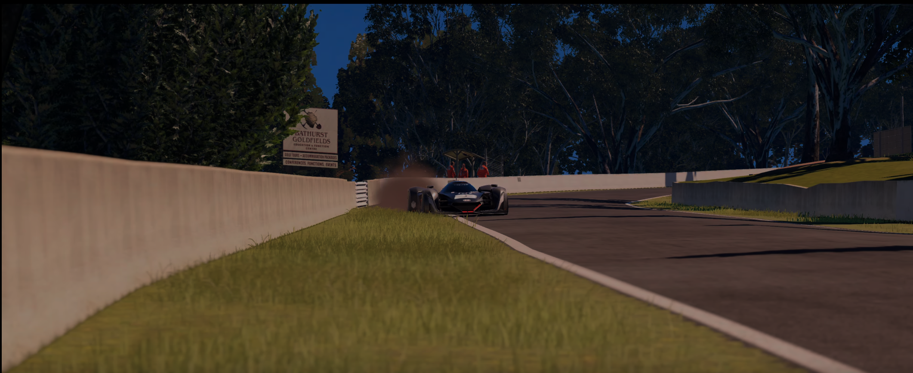
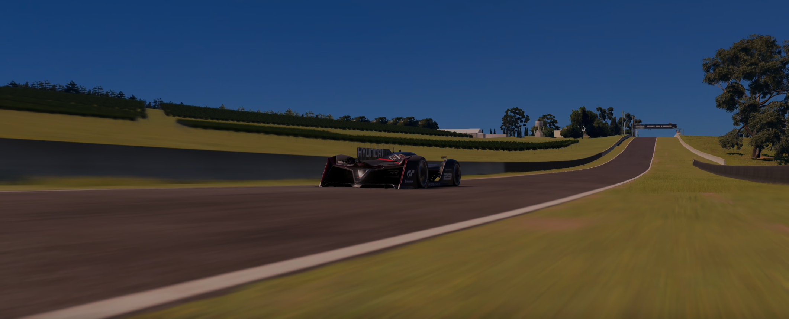
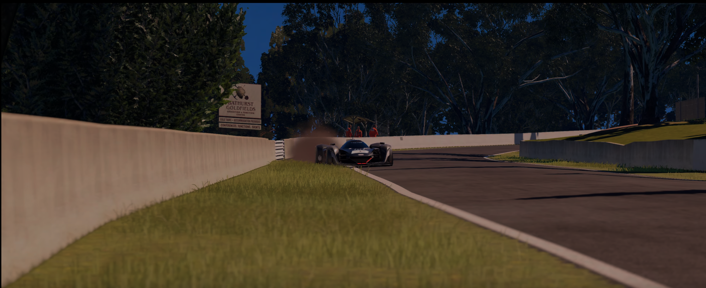
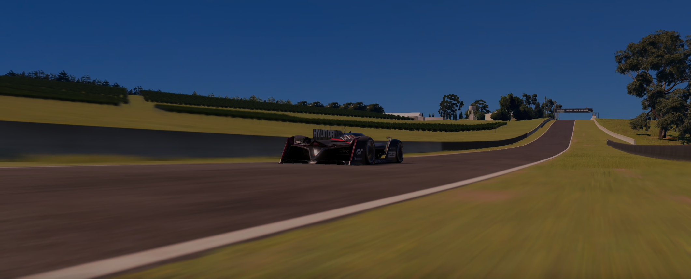

Mount Panorama Circuit is a famous motor racing track located in Bathurst, New South Wales, Australia. The circuit is renowned for its challenging and scenic layout, which includes 23 turns and a maximum elevation of 174 meters, providing breathtaking views of the surrounding countryside. Since its establishment in 1938, the circuit has become home to many famous motor racing events, including the Bathurst 1000, one of the most prestigious and popular races in Australia. The track has seen many legendary drivers and memorable races over the years, including the late Peter Brock, who holds the record for the most wins at the Bathurst 1000.
 


